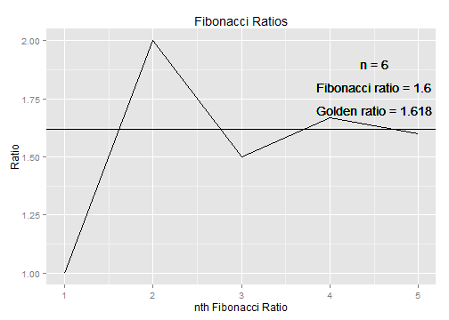

The Golden Ratio
Some interesting properties
Lucas McLaughlin
What is the Golden Ratio?
- The golden ratio is a mathematical constant that can be discovered as follows:
- Given a line segmend, divide it into two sections, a and b.
- Adjust the length of a so that the ratio of the total length to a is equal to the ratio of a to b.
- This ratio is approximately 1.618... and is defined as the golden ratio
The Golden Ratio (con't)
- The exact value of the Golden Ratio is as follows:
\[ \phi = \frac12 + \frac{\sqrt5}2 = \frac{1 + \sqrt5}2 \]
- It can also be approximated using the fibonacci and another iterative process.
- My Shiny app uses interactive elements to demonstrate this.
- The following slides contain some examples from the web app.
The Fibonacci Sequence
- This image shows fibonacci ratios (that is, the value of one fibonacci number divided by the previous) at various points in the fibonacci sequence.
- As you can see, these ratios converge to the golden ratio.
- In the web app, the user will be able to input different values for n and see different graphs.

A Simple Algorithm
- The following iterative process also converges to the golden ratio: \[ \frac1x + 1 \]
- My web app allows the user to pick a starting number and then view the first 10 iterations.
- Here is an exmaple using the starting number 5 and only showing 6 iterations.
| | x |
| 1 | 1 / 5 + 1 = 1.2 |
| 2 | 1 / 1.2 + 1 = 1.833 |
| 3 | 1 / 1.833 + 1 = 1.545 |
| 4 | 1 / 1.545 + 1 = 1.647 |
| 5 | 1 / 1.647 + 1 = 1.607 |
| 6 | 1 / 1.607 + 1 = 1.622 |
References
-Mathisfun.com
-Wikipedia.com